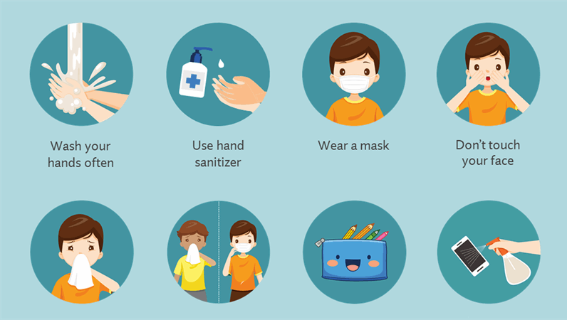

How does COVID-19 spread between people?
We know that the disease is caused by the SARS-CoV-2 virus, which spreads between people in several
different ways.
The virus can spread from an infected person’s mouth or nose in small liquid particles when they cough,
sneeze, speak, sing or breathe. These particles range from larger respiratory droplets to smaller
aerosols.
Current evidence suggests that the virus spreads mainly between people who are in close contact with each
other, typically within 1 metre (short-range). A person can be infected when aerosols or droplets
containing the virus are inhaled or come directly into contact with the eyes, nose, or mouth.
The virus can also spread in poorly ventilated and/or crowded indoor settings, where people tend to spend
longer periods of time. This is because aerosols remain suspended in the air or travel farther than 1
metre (long-range).
People may also become infected by touching surfaces that have been contaminated by the virus when
touching their eyes, nose or mouth without cleaning their hands.
Further research is ongoing to better understand the spread of the virus and which settings are most risky
and why. Research is also under way to study virus variants that are emerging and why some are more
transmissible.
